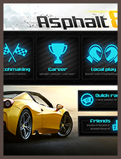
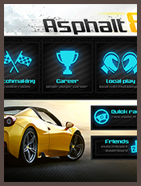
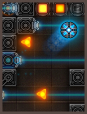
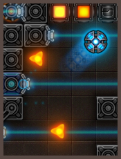
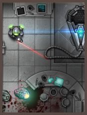
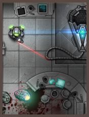

 


 


Volcano Tower is an endless platformer for mobile touch screen devices, currently under development, that tells the story of a remote peacful tribe, living under the constant threat of a volcano god who steals their goods and raids their village.
The hero role is played by a masked tribesmen who stands against the evil volcano god, and enters his cursed tower.
In the tower, the player attempts to avoid being smashed, burned or otherwise eliminated by obstacles falling (mostly) from above.
It is a nerve tensing and fast experience filled with clutch moments and hard difficulty.
The hero must use skill, special power-ups and some heavy deal of luck to get the most gold as he climbs the furthest he can get.
You are guided by the tribe's shaman who offers you access to a store, in which you can purchase all kind of abilities and power-ups to help you climb the doomed tower.
{kind=link}

{kind=link}
{kind=link}
Must of the work is still conceptioal, but for now i have managed to get an early version with the basic gameplay in, with the help of a developer friend.
I'm looking for a talented Unity developer who likes what he sees and want to give Volcano Drop the push it needs for release.
If you know your way around Unity, like the style and the theme, love doing 2D particles & vfx and have a serious attitude to get things done - plz, leave me a message and lets rock this!
Neonball will forever be the first real game project i ever finished. It's a skill-based arcade-puzzler developed for Newgrounds, that got a lot of attention, great reviews, won 1st place at 2013 GameIS awards and featured front-page on NG.
Neonball follows the story of a grim future where mankind has deplited most of its' natural resources and now must survive on the left-overs of any energy resource remaining of the planet. The world is dark, covered with over-grown vegetation and mustly free from the grip of men, except the one last city remaining - the NeonCity.
The game is actually a test, made by the E.N.R (Energy National Resources) that all men must pass to prove worthy of having their share in humanity's remaining energy and granting accsses to the NeonCity.
{kind=link}
{kind=link}
Along the various levels, the player will have to collect stars (3 in each level and are found at hard places to reach) and achieving time-trials (ending the level in less than a pre-determand amount of time) to be a citizen of the NeonCity.
The concept of an energy preservation test, build around manipulating space (when collecting the starts) and time (when pursuing the time-trials) was an idea i had in my mind for some time before i even started to think about Neonball.
We live at times that the survival of our species (and many other species) hangs on the balance, when we have exploited and abused the little we have left, and are keeping to do so in a blind eye.
I truly believe that there will come a day when we will have to restrain our consumption and uncompromised pleasures on the expanse of our world, for there will be none left to provide them.
{kind=link}
{kind=link}
Neonball for me was a fun way to play with the theory of how the world will manage to control the "right for energy" (for there will be little to go around) and how being a true economical demends acknowledging the difficulties in manipuating time and space.
But you know, i could just say it's a lots-of-fun browser game that you should give a try! :D